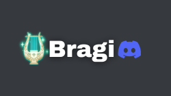
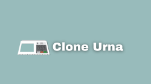
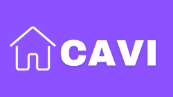
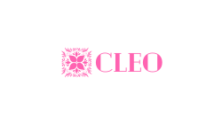

Oi, eu sou Pedro Gregorio. Desenvolvedor Web
Meu nome é Pedro Gregorio, e sou um desenvolvedor web com de cinco anos de atuação no campo. Durante essa jornada, tive a oportunidade de colaborar em uma persidade de projetos, trabalhando com clientes de diferentes segmentos. Essa experiência enriquecedora tem sido fundamental para ampliar meu conhecimento e aperfeiçoar minhas habilidades no desenvolvimento de softwares.
Habilidades/Interesses
-

JavaScript é uma linguagem de programação originalmente voltada para a web, mas hoje em dia é muito versátil, podendo ser utilizada em Desktop, Mobile e diversas outras áreas da tecnologia. Minha atuação com JavaScript está focada no desenvolvimento front-end e back-end.
-

Node.js é uma ferramenta poderosa que utiliza o motor V8 do Google para interpretar o JavaScript em código de máquina, facilitando seu uso em diversas plataformas.
-

MySQL é um gerenciador de banco de dados que utiliza SQL como linguagem de consulta aos dados. Baseado no modelo de entidade e relacionamento para a criação e organização dos dados, possibilita a construção de um banco que possui tabelas inter-relacionadas.
-

Git é uma ferramenta utilizada para versionamento de código, auxiliando na organização de projetos com múltiplos desenvolvedores trabalhando em funcionalidades e resolução de bugs distintos.
-

Vue.js é um framework JavaScript que facilita a criação de sistemas front-end para a web, permitindo a utilização de bibliotecas adicionais.
-

Ruby on Rails é um framework utilizado para o desenvolvimento web, oferecendo praticidade na criação de sistemas front-end.
-

Docker é uma plataforma que simplifica a criação e o gerenciamento de ambientes de desenvolvimento. Facilita a criação de sistemas front-end para a web, utilizando bibliotecas adicionais.
-

AWS (Amazon Web Services) é uma plataforma de serviços em nuvem que oferece uma variedade de ferramentas para o desenvolvimento e hospedagem de sistemas front-end para a web, permitindo a utilização de diversas bibliotecas.
Projetos
-

Um bot do Discord desenvolvido em JavaScript que oferece uma experiência de reprodução de músicas a partir do YouTube e do Spotify. O bot permite que os usuários pesquisem e toquem suas músicas favoritas diretamente nos canais de voz do Discord, proporcionando momentos de entretenimento e diversão para os membros do servidor.
-

O projeto "Urna Eletrônica - Clone Interativo" é uma recriação virtual do sistema de votação utilizado em eleições. Desenvolvido com as tecnologias: VueJs, Ruby on Rails e Mysql. O projeto tem como objetivo simular uma experiência realista de votação, proporcionando aos usuários uma oportunidade única de interagir com a urna eletrônica em um ambiente virtual.
-

O projeto "CAVI - Compra, Aluguel e Venda de Imóveis" é uma plataforma online voltada para facilitar o processo de compra, aluguel e venda de imóveis. Neste ambiente virtual, corretores imobiliários têm a possibilidade de cadastrar e gerenciar seus imóveis, inserindo informações detalhadas, imagens e descrições para oferecer aos potenciais compradores e locatários. Por outro lado, os usuários têm acesso a uma área de visualização dos imóveis disponíveis, podendo explorar diversas opções e entrar em contato diretamente com os corretores para obter mais detalhes ou agendar visitas.
-
O projeto "Mr. Duque" é uma solução eficiente e organizada para o gerenciamento de processos contratuais em uma empresa que faz emprestimo consignado. Através de uma esteira virtual, os funcionarios podem acompanhar cada etapa do ciclo de vida de um contrato, desde sua criação até a finalização. A plataforma oferece uma visão abrangente dos contratos em andamento, atribuindo status específicos, como "Digitando", "Digitalizando", "Aguardando Assinatura", entre outros, para facilitar o controle e monitoramento de cada documento.
-

é uma vitrine online cuidadosamente projetada para exibir o talento e a habilidade de uma talentosa manicure. Com uma combinação perfeita de design elegante e recursos interativos, o site oferece aos visitantes uma experiência envolvente e inspiradora, mergulhando-os no mundo criativo e artístico da profissional de beleza.